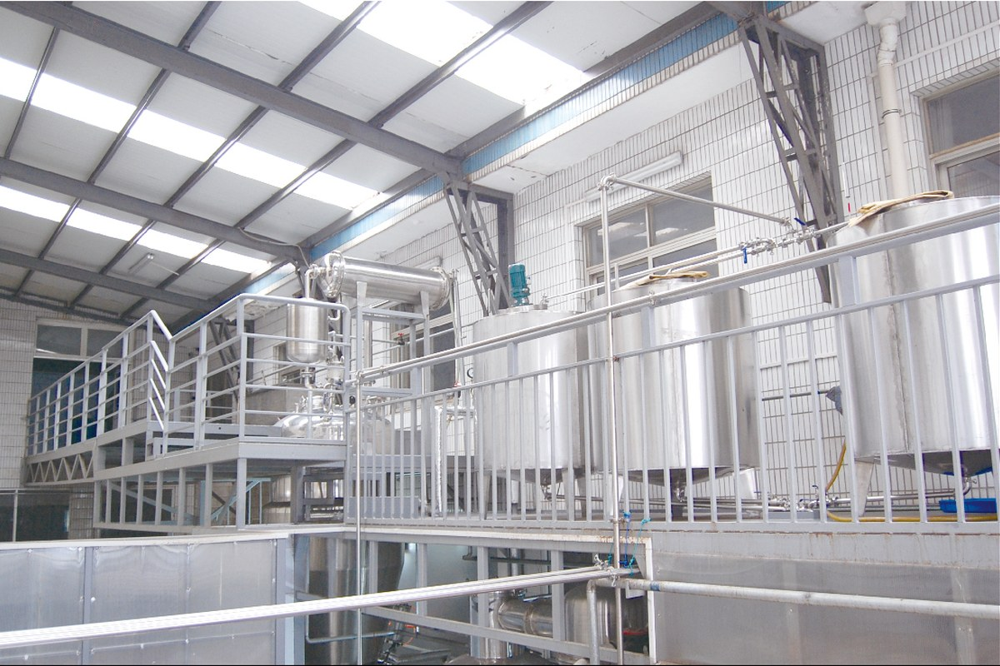
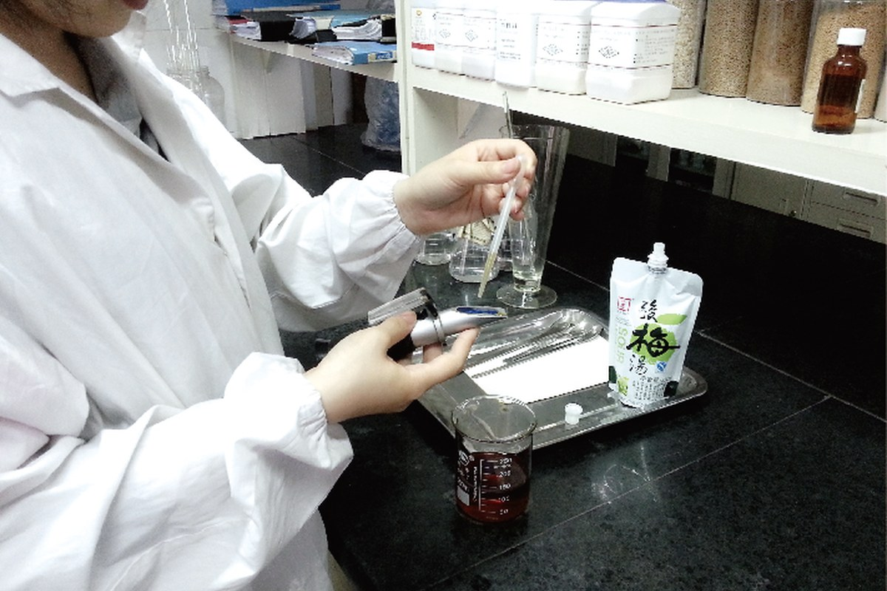
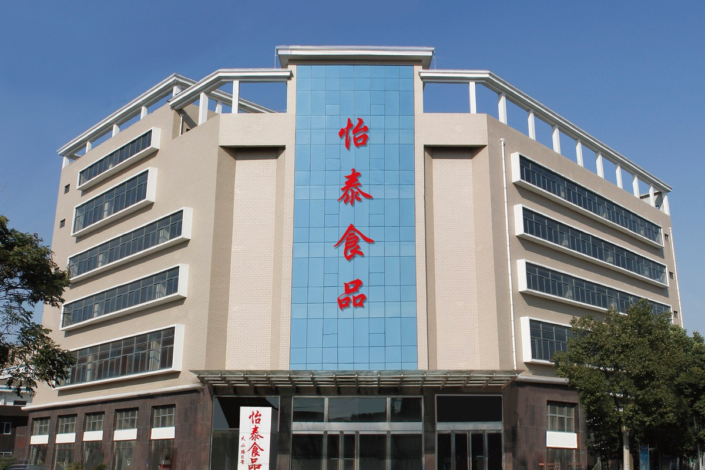

ManufacturingR&M Trading LLC · North American Market Operations
Connecting Established Manufacturing with the North American Food and Beverage Market
R&M specializes in sour plum beverages, Asian botanical drinks and foodservice solutions for North American restaurants, distributors, retailers and private label customers.
Trust Through Action. Delivering Better Products, Consistently.
U.S. OperationsBellevue market coordination
Logistics SupportKent warehousing and fulfillment
ManufacturingYitai Food production and R&D
B2B ServiceFoodservice, wholesale and private label
Signature Products & Beverage Solutions
Sour plum and Asian botanical beverages lead our product focus.
Four clear entry points connect established products with foodservice, retail and private-label needs.
 Sour Plum Collection
Osmanthus sour plum drink, sour plum crystals, concentrates and foodservice syrup
Sour Plum Collection
Osmanthus sour plum drink, sour plum crystals, concentrates and foodservice syrup
 Asian Botanical Drinks
Orange-peel plum, hawthorn smoked-plum, kumquat lemon and mature botanical flavors
Asian Botanical Drinks
Orange-peel plum, hawthorn smoked-plum, kumquat lemon and mature botanical flavors
 Foodservice Beverage Solutions
Large packs, concentrates, powdered beverages and standardized store preparation
Foodservice Beverage Solutions
Large packs, concentrates, powdered beverages and standardized store preparation
 Milk Tea & Oats
Additional milk tea and oat capabilities for retail and B2B programs
Milk Tea & Oats
Additional milk tea and oat capabilities for retail and B2B programs
Manufacturing & Quality
The capabilities behind every commercial conversation.
Manufacturing, quality, compliance and supply-chain evidence are presented as core company capabilities.

Quality & TestingProcess control, laboratory review and product release
Review quality systems
Supply & ExportDocumentation, import coordination, warehousing and delivery
Review fulfillmentR&M & Yitai Food
U.S. market operations connected to established manufacturing.
R&M coordinates North American import, customer communication, channel development and commercial follow-up. Yitai Food provides product development, manufacturing, quality systems and OEM/ODM capabilities.
Understand the partnershipU.S. importing · B2B communication · compliance coordination · distribution and channel support
Manufacturing · product development · quality systems · OEM / ODM
Customer & Cooperation Experience
Experience supporting foodservice, channel and export customers.
Our experience includes the following customer profiles across foodservice, restaurant groups, retail and distribution.
We support restaurant chains, food channels and brand customers with product development, scaled manufacturing, export coordination and ongoing delivery.
B2B Cooperation
A clear path from product requirements to U.S. delivery.
Built for foodservice customers, distributors, wholesalers and private-label programs.
Share Requirements
Define product, channel, packaging, volume and timing.
Review & Samples
Align formulation, applications and commercial samples.
Production & Release
Confirm packaging, labels, production and quality release.
Import & Delivery
Coordinate export documents, U.S. import, storage and fulfillment.
Shop
Choose the purchasing path that fits the order.
Retail purchases, standard wholesale and large or customized projects follow separate paths.
Stories, Cases & Insights
Company background, professional content and compliance materials.
Start with About R&M Trading and the R&M–Yitai manufacturing relationship, then explore food safety, product applications and trade-show updates.
Start a Conversation
Discuss a product, channel or sourcing requirement.
Tell R&M what you need and the appropriate U.S. market and manufacturing teams will coordinate the next step.